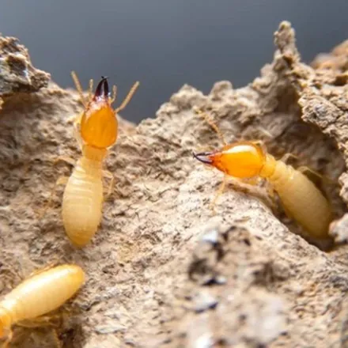
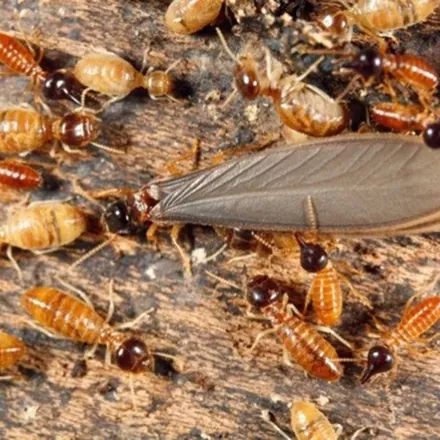

موریانه را «تخریبگر خاموش» مینامند؛ حشرهای که سالها بیسروصدا داخل چهارچوبها، کمدها و کفپوشهای خانه شما کار میکند و وقتی متوجه حضورش میشوید که چوب از داخل پوک شده است. برخلاف بیشتر آفات، خسارت موریانه مستقیماً مالی و گاهی سازهای است. در این راهنما نشانههای حملهٔ موریانه، تفاوت آن با مورچهٔ بالدار، روشهای پیشگیری و روند دفع تخصصی موریانه در کرج را بررسی میکنیم.
شناخت موریانه و انواع رایج آن در ایران
موریانهها حشراتی اجتماعیاند که در کلونیهایی از چند صد تا میلیونها عضو زندگی میکنند و از سلولز چوب، کاغذ و الیاف گیاهی تغذیه میکنند. هر کلونی سه صنف دارد: کارگرانِ کرمرنگ که تخریب اصلی کار آنهاست، سربازان با آروارهٔ قوی که از لانه دفاع میکنند و جفت تولیدمثلی (شاه و ملکه) که در عمق لانه تخمگذاری میکند. تا وقتی ملکه زنده است، از بین بردن کارگرانی که میبینید فقط ظاهر مشکل را پاک میکند.
| ویژگی | موریانه زیرزمینی | موریانه چوب خشک |
|---|---|---|
| محل کلونی | داخل خاک، اطراف پی ساختمان | داخل خود چوب (چهارچوب، مبلمان) |
| نیاز به رطوبت | زیاد؛ به خاک مرطوب وابسته است | کم؛ در چوب خشک هم زنده میماند |
| نشانه شاخص | تونلهای گلی روی دیوار و پی | فضولات دانهدانه شبیه خاکاره کنار چوب |
| روش اصلی مبارزه | حائل شیمیایی خاک و تزریق | تزریق مستقیم به چوب آلوده |
در ساختمانهای کرج، موریانهٔ زیرزمینی شایعتر است و معمولاً از طریق درز پی و لولهٔ تأسیسات وارد ساختمان میشود.
نشانههای حمله موریانه به ساختمان
- تونلهای گلی: مسیرهای باریک خاکی روی دیوار، پی و کنجها؛ شاخصترین نشانه موریانه زیرزمینی.
- چوب پوک: چهارچوب یا کفپوشی که با ضربه صدای توخالی میدهد یا پیچگوشتی بهراحتی در آن فرو میرود.
- تاول و موج در رنگ و کاغذدیواری: در اثر رطوبت و فعالیت زیر سطح.
- بالهای ریخته: کنار پنجرهها و چراغها پس از پرواز جفتگیری موریانههای بالدار در بهار.
- فضولات دانهریز: تودههای شبیه خاکاره یا فلفل زیر چوب آلوده (نشانه موریانه چوب خشک).
- خرابی کتابها و کارتنها: در انباریها و کتابخانههایی که مدت طولانی دستنخورده ماندهاند.
خسارتهای موریانه
موریانه نیش نمیزند و بیماری منتقل نمیکند؛ اما از نظر مالی پرهزینهترین آفت ساختمان است:
- پوک شدن چهارچوب در و پنجره، کمد دیواری، پارکت و اسکلت چوبی سقف از داخل، بدون علامت ظاهری اولیه.
- نابودی کتابها، اسناد، فرش و هر کالای سلولزی در انبار.
- هزینههای سنگین تعمیر که معمولاً وقتی آشکار میشود که آلودگی سالها پیش شروع شده است.
- کاهش جدی ارزش ملک هنگام فروش در صورت سابقه موریانهزدگی.
- حمله برخی گونهها به ریشه درختان و آسیب به باغ و فضای سبز.
راههای پیشگیری از موریانه
- تماس مستقیم چوب با خاک را حذف کنید؛ الوار و جعبههای چوبی را روی پایه یا پالت نگه دارید.
- نم و نشتی زیرزمین، سرویسها و لولهها را سریع تعمیر کنید؛ رطوبت بهترین دعوتنامه برای موریانه زیرزمینی است.
- درز و ترک پی و دیوارها و محل عبور لولهها را ترمیم کنید.
- کارتن، روزنامه و چوبهای بلااستفاده را در انباریها انبار نکنید.
- انباری و کتابخانههای کمرفتوآمد را هر چند ماه یکبار بازرسی کنید.
- هنگام خرید مبلمان چوبی دستدوم، به سوراخهای ریز و فضولات خاکارهای دقت کنید.
روشهای خانگی و محدودیتهای آنها
برای یک قطعه مبلمان کوچکِ آلوده، راههایی مانند آفتاب دادن چند روزه (گرما موریانه چوب خشک را از بین میبرد)، تزریق حشرهکش آماده در سوراخها یا دور انداختن قطعه آلوده جواب میدهد.
اما دربارهٔ ساختمان، واقعیت این است: کلونی اصلی معمولاً در عمق خاک یا داخل دیوار است و ممکن است دهها متر با محل خسارت فاصله داشته باشد. اسپری کردن روی موریانههای قابل دیدن فقط کارگران همان نقطه را میکشد و کلونی مسیر تازهای باز میکند. دفع واقعی موریانه به شناسایی مسیرها، تزریق در عمق و ایجاد حائل شیمیایی پیوسته نیاز دارد؛ کاری تخصصی که تجهیزات و سم حرفهای میخواهد. اگر در انباری علاوه بر موریانه با جوندگان هم درگیر هستید، راهنمای دفع موش و جوندگان در کرج را هم ببینید.
روند دفع تخصصی موریانه در آرام محیط البرز
آرام محیط البرز با مجوز رسمی وزارت بهداشت، درمان و آموزش پزشکی و مدیریت مهندس فاطمه براتی، کارشناس بهداشت محیط، دفع موریانه را در منازل، انبارها و ساختمانهای اداری کرج به این ترتیب انجام میدهد:
۱. مشاوره و بازدید رایگان
کارشناس نقاط آلوده، مسیرهای نفوذ و نوع موریانه را شناسایی میکند و بر اساس آن روش مناسب و هزینه دقیق را پیش از شروع کار اعلام میکند.
۲. اجرای تخصصی با سم مجاز
بسته به شرایط، ترکیبی از تزریق سم دارای مجوز وزارت بهداشت به کانونها و مسیرهای عبور، ایجاد حائل شیمیایی در خاک اطراف پی و طعمهگذاری اجرا میشود تا سم به عمق کلونی و ملکه برسد و کلونی از ریشه حذف شود.
۳. ضمانت کتبی و پیگیری
پس از اجرا، ضمانتنامه کتبی دریافت میکنید و توصیههای کنترل رطوبت و پیشگیری برای جلوگیری از آلودگی دوباره ارائه میشود.
عوامل مؤثر بر هزینه دفع موریانه در کرج
- وسعت آلودگی و تعداد نقاط درگیر در ساختمان.
- روش موردنیاز؛ تزریق موضعی، حائل خاکی یا طعمهگذاری.
- مساحت و نوع سازه (مسکونی، انبار، اداری).
- سطح دسترسی به پی، دیوارها و فضاهای زیر کف.
جمعبندی و راه ارتباط
موریانه تنها آفتی است که میتواند بیصدا به سازه و اموال شما خسارت میلیونی بزند؛ و هر ماه تأخیر، دامنه خسارت را بزرگتر میکند. اگر تونل گلی، چوب پوک یا حشرات بالدار در خانه یا انبار خود در کرج دیدهاید، همین امروز برای بازدید و مشاوره رایگان با کارشناسان آرام محیط البرز تماس بگیرید: 09193613357 و 026-34209019. برای آفت سرسخت آشپزخانهها هم راهنمای سمپاشی سوسک در کرج را بخوانید.
سوالات متداول دفع موریانه
نشانههای حمله موریانه به خانه چیست؟
مهمترین نشانهها عبارتاند از: تونلهای گلی باریک روی دیوار و پی ساختمان، صدای پوک از چوبی که ظاهرش سالم است، تاول زدن یا موج برداشتن رنگ و کاغذدیواری، دیدن حشرات بالدار یا بالهای ریخته کنار پنجرهها و فرورفتن پیچگوشتی در چهارچوب چوبی با کمترین فشار.
تفاوت موریانه با مورچه بالدار چیست؟
موریانه بالدار کمر یکدست و پهن، شاخک صاف و دو جفت بال هماندازه دارد؛ در حالی که مورچه بالدار کمر باریک، شاخک زانودار و بالهای جلویی بلندتر از عقبی دارد. دیدن موریانه بالدار داخل خانه نشانه جدی وجود کلونی فعال در ساختمان یا نزدیکی آن است.
دفع موریانه چگونه انجام میشود؟
بسته به محل و شدت آلودگی، ترکیبی از تزریق سم مجاز به محل عبور و کانونها، ایجاد حائل شیمیایی در خاک اطراف پی و در صورت نیاز طعمهگذاری انجام میشود تا سم به عمق کلونی و ملکه منتقل شود. سمپاشی سطحی بهتنهایی کلونی موریانه را از بین نمیبرد.
آیا موریانه برای انسان خطر مستقیم دارد؟
موریانه نیش نمیزند و بیماری منتقل نمیکند؛ خطر آن مالی است. کلونی موریانه بیسروصدا چهارچوبها، کمدها، کفپوشها، کتابها و حتی اسکلت چوبی سقف را از داخل پوک میکند و خسارت معمولاً زمانی دیده میشود که گسترده شده است.
هزینه دفع موریانه در کرج چقدر است؟
هزینه به وسعت آلودگی، مساحت ساختمان، روش موردنیاز (تزریق، حائل خاکی، طعمهگذاری) و تعداد نقاط درگیر بستگی دارد. بازدید و مشاوره کارشناسان آرام محیط البرز رایگان است و قیمت پیش از شروع کار بهصورت شفاف اعلام میشود. برای استعلام با شماره 09193613357 تماس بگیرید.